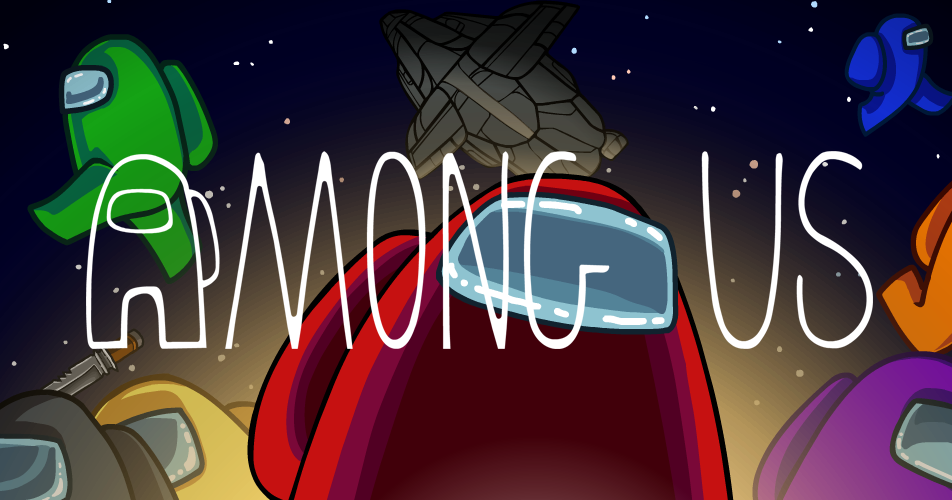
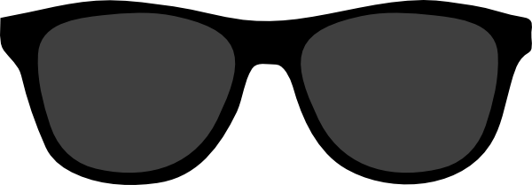

Do you ever feel like you don’t fit in with the kids these days? Do they ever say something that you just can’t wrap your head around? Well, look no further! Here are some examples of common modern english slang.
Since 2019, more and more have been incorporating this word into their Twitter vocabulary. Originally used as a word in mathematics to describe how many times one number goes in another, “Ratio” is now also a term used as a reply on twitter to show disrespect or indifference to another’s opinion. A few ways that people can perform a ratio or express their dislike of someone else’s opinion is through replies such as “You fell off”, “.”(Yes, literally just a period to show indifference), the classic “ratio”, or even a creative way to incorporate ratio into a reply, as seen here.
A word of intriguing origins, this word has slowly been creeping into peoples’ encyclopedias since the early 2010s, until its popularity exploded with the creation of the 2018 game “Among Us”, and its rise to global prominence in 2020. During the Among Us “Boom”, several famous internet content creators played this game with their friends. One of the main game mechanics of Among Us is the meeting between each round, and during these meetings, these content creators would call out the other players whom they found suspicious, hence the word “Sus” (for suspicious).
One of the most versatile words of the Modern English Arsenal, this word can be used in almost any situation. Sad? Stressed? Angry? Scared? Tired? Disgusted? Disappointed? ALL of these emotions AND MORE can be expressed with one four letter word. Prepare to be dazzled:
“Stan” is a verb or noun that originally originated 12 years ago from “Stan” (Warning: This song contains explicit language and references to suicide.), a song by Eminem about a man named Stan who is a huge fan of Eminem. He sends letters and voice recordings to him, but Eminem never writes back, so eventually, he drives off of a bridge with his pregnant wife out of despair. This song built the foundation for this word, which has been extremely popular to express how much you worship and idolize a certain celebrity. An easy way to remember the word Stan is to think of it as a short form for “Stalker-Fan”.
We're starting to get into 2020’s territory. “Cope Harder” means exactly what it says it means. Commonly used in combination with “Ratio” and “Skill Issue”, this phrase is used as a playful taunt, usually to an opposing player in a video game or someone who lost in a certain aspect of life, such as getting a poor mark on a test.
This phrase has been around for quite a long time, but is becoming more and more popular as of late. “No Cap” originally was a phrase that signifies that you are telling the truth, but more and more people nowadays are using it as a phrase to emphasize the “Realness” or importance of something. One might say, “That grub was bussin‘, no cap.”(Translator’s note: That food/meal was great, for real.)
Lit is a slang word that means “Awesome” or “Cool”. This word has been around for quite some time, and its meaning has not changed much since its origins. It’s similar to the slang word “Fire”
The more widely accepted definition of slay is to kill something, usually a monster. But in the modern day, to slay is to succeed in an endeavor. It’s also common knowledge that the more y’s you add to the end of “Slay”, the harder they slew. If a classmate got a great mark on a test? Slay. Your sister wore a cool outfit and looked nice in it? Slayy. Your bestie demands a raise from her boss and gets promoted? SLAYYYYYY QUEEN.
A skill issue, despite its name, typically has nothing to do with skill at all. Like “Cope Harder”, this phrase is used as a taunt when something unfortunate happens to somebody. To further worsen the taunt, one might say, “Sounds like a skill issue” specifically when something unlucky happens to one of their acquaintainces.
The modern meaning of “Shade” can be both a noun and a verb. To shade someone is to subtly and nonchalantly say something disrespectful to them. This usage of shade has been around for a couple decades, and has loose ties to the word “Shady”.
My Sources for this webpage.
Go back to the top.